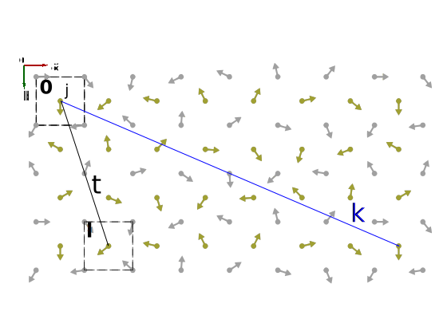

Magnetic Structures in SpinW
How to define a magnetic structure for your calculations and refine it.
| $$\hat{S}^{\pm}|m\rangle = \sqrt{(S\mp m)(S+1\pm m)}\ \ |m\pm1\rangle$$ | |||||||
|---|---|---|---|---|---|---|---|
| $$m = S, S-1, S-2, ..., -S$$ | |||||||
| $$a|n\rangle = \sqrt{n}\ |n-1\rangle$$ | |||||||||||||||
|---|---|---|---|---|---|---|---|---|---|---|---|---|---|---|---|
| $$a^{\dagger}|n\rangle = \sqrt{n+1}\ |n+1\rangle$$ | |||||||||||||||
| $$n=0, 1, 2, ..., \infty$$ | |||||||||||||||
| $n=0$ corresponds to $m=S$ | |||||||||||||||
Linear spin wave theory is about small deviations of the spins away from their (ordered) ground state
Therefore, before calculating the spin precessions, we need to define the ordered state
There are two main ways to define the magnetic structure in SpinW:
| $$\hat{S}^{\pm}|m\rangle = \sqrt{(S\mp m)(S+1\pm m)}\ \ |m\pm1\rangle$$ | |||||||
|---|---|---|---|---|---|---|---|
| $$m = S, S-1, S-2, ..., -S$$ | |||||||
| $$a|n\rangle = \sqrt{n}\ |n-1\rangle$$ | |||||||||||||||
|---|---|---|---|---|---|---|---|---|---|---|---|---|---|---|---|
| $$a^{\dagger}|n\rangle = \sqrt{n+1}\ |n+1\rangle$$ | |||||||||||||||
| $$n=0, 1, 2, ..., \infty$$ | |||||||||||||||
| $n=0$ corresponds to $m=S$ | |||||||||||||||
Because of the Hamiltonian in SpinW is formulated in a rotating coordinate system, defining a single-$k$ magnetic structure using a propagation vector is computationally more efficient than defining a supercell
This method will also allow the definition of a true incommensurate structure
This is in contrast to similar programs such as SpinWaveGenie and McPhase which only allow the supercell definition
However, multi-$k$ and more complex structures cannot be defined in this way and will need a supercell

The $j^{\mathrm{th}}$ magnetic moment in unit cell $l$ which is separated from the first unit cell $0$ by the vector $t$ can be expressed as a Fourier series,
$$ \mathbf{m}_j = \sum_{n} \mathbf{\Psi}_j^{\mathbf{k}_n} \exp^{-2\pi i\mathbf{k}_n\cdot\mathbf{t}} $$
For many materials, there is only a single propagation vector $k$:
$$ \mathbf{m}_j = \mathbf{\Psi}_j^{\mathbf{k}} \exp^{-2\pi i\mathbf{k}\cdot\mathbf{t}} $$
The allowed propagation vectors $\mathbf{k}_n$ are related to each to each other by the rotation symmetry of the crystal structure (they are the star of $k$).
In the case of a single-$k$ magnetic structure, the spin wave Hamiltonian is invariant under all rotations
This allows the Hamiltonian to be expressed in a rotating coordinate system which allows SpinW to calculate more efficiently than codes which define the magnetic structure in terms of a supercell.
The basis vector $\mathbf{\Psi}_j^{\mathbf{k}}$ is in general complex.
A complex basis vector requires both $\mathbf{k}$ and $-\mathbf{k}$ components to produce a real moment
$$ \mathbf{m}_j = \mathbf{\Psi}_j^{\mathbf{k}} \left[\cos(-2\pi \mathbf{k}\cdot\mathbf{t}) + i\sin(-2\pi \mathbf{k}\cdot\mathbf{t})\right] + \mathbf{\Psi}_j^{-\mathbf{k}} \left[\cos(2\pi \mathbf{k}\cdot\mathbf{t}) + i\sin(2\pi \mathbf{k}\cdot\mathbf{t})\right] $$
$$ = 2\operatorname{Re}(\mathbf{\Psi}_j^{\mathbf{k}}) \cos(-2\pi \mathbf{k}\cdot\mathbf{t}) + 2\operatorname{Im}(\mathbf{\Psi}_j^{\mathbf{k}}) \sin(-2\pi \mathbf{k}\cdot\mathbf{t}) $$
because $\mathbf{\Psi}_j^{-\mathbf{k}} = (\mathbf{\Psi}_j^{\mathbf{k}})^{\dagger} = \operatorname{Re}(\mathbf{\Psi}_j^{\mathbf{k}}) - i\operatorname{Im}(\mathbf{\Psi}_j^{\mathbf{k}})$
A real basis vector will only give a collinear magnetic structure, but possibly with a varying moment
A complex basis vector with imaginery part perpendicular to the real part can give helical magnetic structures.
Reference: A.S. Wills, J. Phys. IV France, 11 (Pr9) 133-158 (2001).
spinw.mag_str SpinW stores the magnetic structure is stored in the spinw.mag_str field.
It can store arbitrary magnetic structures using Fourier components.
Subfields:
kFnExt The experimental magnetization can be obtained by multiplying F with the g-tensor!
| Propagation vector: | mag_str.k |
| Basis vector: | mag_str.F |
| Magnetic supercell: | mag_str.nExt |
A helical or modulated single-$k$ structure can be stored by using k and F
and setting nExt to a single unit cell [1 1 1]
If there are n atoms in the structural unit cell, F should be an
n-column matrix.
| Propagation vector: | mag_str.k |
| Basis vector: | mag_str.F |
| Magnetic supercell: | mag_str.nExt |
A supercell magnetic structure can be stored by using a real F and nExt
and setting k to zero [0 0 0].
The number of magnetic moments stored in F are: nMagExt = prod(nExt)*nMagAtom
So, F should be an nMagExt-column matrix with moments in the following order:
mag_str.N_ext = [1 1 1];
mag_str.k = [1/2 0 0];
mag_str.F = [-i;
1;
0];
mag_str.N_ext = [2 1 1];
mag_str.k = [0 0 0];
mag_str.F = [0 0;
1 -1;
0 0];
For spin wave calculation, the complex magnetic structure is converted to the rotating frame representation using the
spinw.magstr() function.
Output of spinw.magstr() is a struct with fields:
nExtknSThe representation allows an additional k=0 component parallel to n, however this is rarely used.
The conversion from Fourier components to rotating frame representation is not always possible, in this case
magstr() gives the best approximation and gives a warning. The conversion is approximate:
To input magnetic structures use spinw.genmagstr(‘mode’,...)
Possible modes:
random real and imaginary magnetization vectors
chain.genmagstr('mode','random','next',[4 1 1])
direct input of every field
chain.genmagstr('mode','direct','next',[4 1 1],'S',[1 0 -1 0;0 1 0 -1;0 0 0 0]);
tile a magnetic supercell using the given data
extend the given structure by applying rotations on the moments moments are either given in rotating frame formalism (S,n) or as complex vectors (S)
chain.genmagstr('mode','helical','next',[4 1 1],'S',[1; 0; 0],'k',[1/8 0 0],'n',[0 0 1])
chain.genmagstr('mode','fourier','next',[8 1 1],'Fk',{[1; 1i; 0] [1/8 0 0]})
uniform rotation of all moments
chain.genmagstr('mode','rotate','n',[1 0 0])
give parameters to a constraint function to generate magnetic structure
chain.genmagstr('mode','func','func',@gm_spherical3d,'x',[pi/2 0.2 pi/2 0.4 pi/2 0.6 pi/2 0.8 0 0 0 0 0])
The magnetic structure can be optimised as a classical ground state of the spin Hamiltonian.
Three methods are available:
sw.optmagk()sw.optmagtsteep()sw.optmagstr()@gm_planar(), etc.)sw.anneal()The magnetic structure can be optimised as a classical ground state of the spin Hamiltonian.
Three methods are available:
sw.optmagk()sw.optmagtsteep()sw.optmagstr()@gm_planar(), etc.)sw.anneal()To optimize magnetic structure with constraints, use the spinw.optmagstr() method.
@gm_planar() planar magnetic structure:@gm_spherical3d() general magnetic structure:xmin and xmax, starting value x0